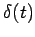
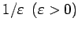
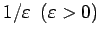
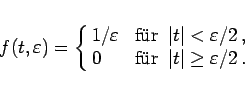
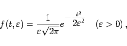
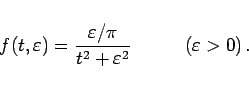
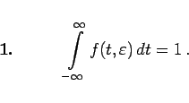
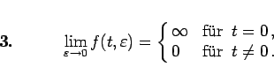

Inhalt Index DeskTop Bronstein

 Integraltransformationen Laplace-Transformation Eigenschaften der Laplace-Transformation Diracsche Delta-Funktion und Distributionen
Integraltransformationen Laplace-Transformation Eigenschaften der Laplace-Transformation Diracsche Delta-Funktion und Distributionen


Analog zu (15.28) kann die Impulsfunktion  durch einen Rechteckimpuls der Breite  und der Höhe  approximiert werden:
und der Höhe  approximiert werden:
|  | (15.33a) |
Weitere Beispiele für die Approximation von sind Glockenkurven und LORENTZ-Funktionen:
|  | (15.33b) |
|  | (15.33c) |
Allen diesen Funktionen sind die folgenden Eigenschaften gemeinsam:
|  | (15.34a) |
| (15.34b) |
|  | (15.34c) |